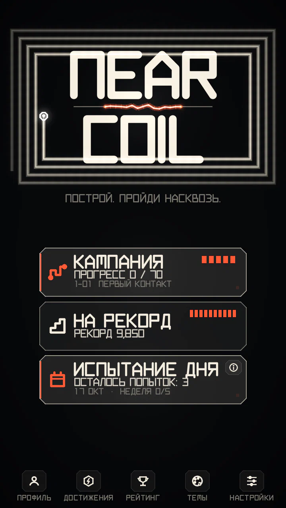
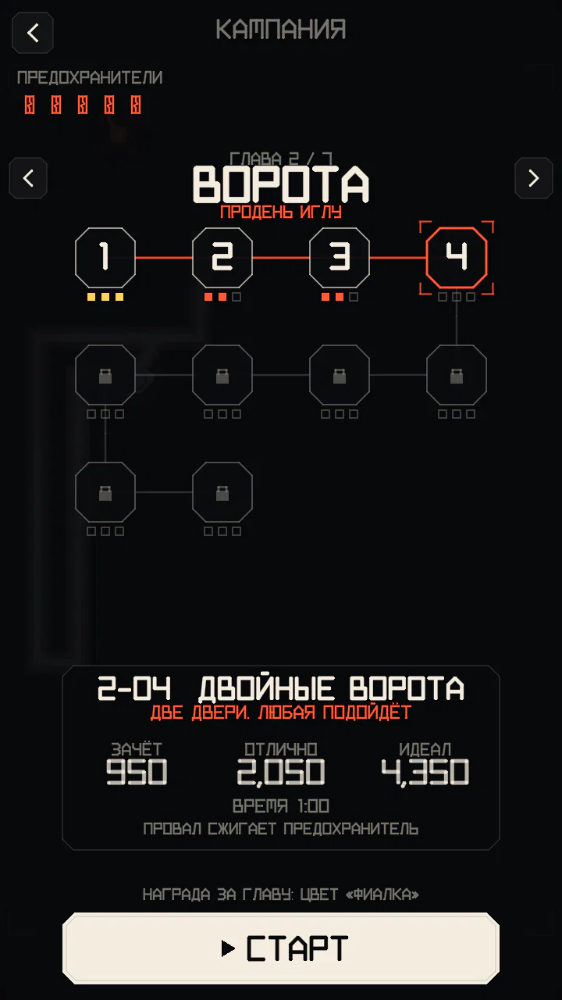
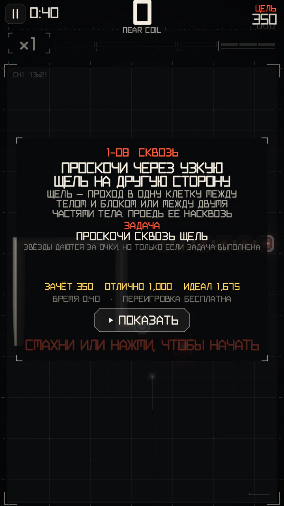
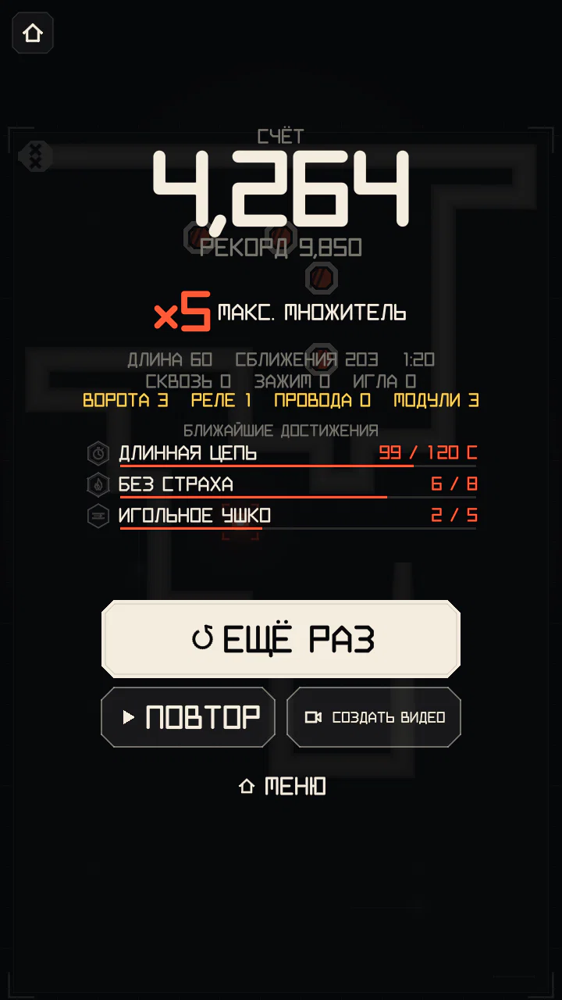

Режимы игры
Три способа играть по одним правилам: НА РЕКОРД — ради рекорда, ИСПЫТАНИЕ ДНЯ — одно общее поле на день, и КАМПАНИЯ из 70 уровней ручной работы.


НА РЕКОРД
Бесконечный режим. Одни правила для всех: стандартное поле и скорость, все четыре события и все три модуля. Забег длится до столкновения.
- Лучший счёт попадает в онлайн-рейтинг: мир, твоя страна (выбирается в настройках, менять можно раз в 30 дней) или платформа, за всё время или за неделю.
- Нажми на имя в таблице: ПРОФИЛЬ откроет профиль игрока, СМОТРЕТЬ — повтор его забега (он есть у каждого забега в таблице). Сервер переигрывает присланные забеги, чтобы их проверить.
- Без сети забег засчитывается локально и отправляется позже.
Недельные лиги
Когда игроков становится достаточно (300 за неделю), недельная таблица делится на лиги — как в Duolingo:
- Первый забег на рекорд за неделю ставит тебя в группу примерно из 30 игроков твоей ступени. Очки в лиге — твой лучший забег за неделю.
- Неделя кончается в понедельник в 00:00 UTC: первые 5 каждой группы поднимаются на ступень, последние 5 — опускаются.
- 6 ступеней, снизу вверх: МЕДЬ, СЕРЕБРО, ЗОЛОТО, ПЛАЗМА, ДУГА, ЯДРО. Награды только косметические.
Пока игроков меньше, показывается обычная недельная таблица.
ИСПЫТАНИЕ ДНЯ
- Одно поле в день, одинаковое для всех: те же узлы при тех же ходах и те же события. Новое начинается каждый день в 00:00 UTC.
- 3 зачётные попытки в день. Попытка тратится в момент старта, так что выход после неудачного начала её всё равно расходует. Потом можно тренироваться на поле дня до завтра.
- В рейтинг дня идёт лучшая зачётная попытка.
- Первая попытка дня возвращает один предохранитель кампании.
- Недельная цель: пройди испытание дня в 5 разных дней одной недели (с понедельника по воскресенье, UTC) — и получишь +1 предохранитель, раз в неделю. Он начисляется даже при полном запасе (до 6/5). Вторая попытка в тот же день и тренировка не считаются. История испытаний за месяц — на вкладке ДЕНЬ в разделе ДОСТИЖЕНИЯ.
- Для зачётных попыток нужна сеть (их выдаёт сервер); без сети — только тренировка.
- Испытание дня идёт ровно по правилам игры на рекорд.
КАМПАНИЯ


70 уровней в 7 главах. Каждая глава учит одной идее и заканчивается экзаменом; каждый уровень меняет несколько правил (поле, скорость, события, модули, старт). Полный список со всеми целями — на странице Все уровни кампании.
Цели и медали
- У каждого уровня три цели по очкам — ЗАЧЁТ, ОТЛИЧНО и ИДЕАЛ — и лимит времени.
- У многих уровней есть ещё задача: она написана на карточке уровня под словом ЗАДАЧА и видна весь забег. Сделать что-то несколько раз (проехать ворота 3 раза, взять ФОРСАЖ из порта), никогда не делать чего-то (не ездить в короткие ворота, не дать зоне сжечь накопленное) или набрать и удержать множитель («набери ×2 за 20 с и не опускайся ниже»). Нарушил задачу — забег кончается сразу; не выполнил к концу времени — тоже провал: в обоих случаях уровень не пройден, сколько бы ни было очков. Звёзды по-прежнему дают за очки — когда задача выполнена.
- Уровень кончается, когда вышло время, при столкновении или при провале задачи; ИДЕАЛ уровень не завершает, можно играть дальше ради рекорда. Итоги начинаются с полученной медали (столкновение после неё — лишь пометка). Медаль — лучшая цель, до которой дошёл счёт; очки при столкновении не теряются, так что полученная медаль остаётся, даже если потом разобьёшься (если задача к этому времени выполнена).
- Получив медаль, можно завершить уровень из меню паузы.
- ЗАЧЁТ открывает следующий уровень. Пройденные уровни можно переигрывать когда угодно ради медали получше.
- У многих уроков на карточке уровня есть кнопка ПОКАЗАТЬ: короткая демонстрация приёма.


ПРЕДОХРАНИТЕЛИ
- Предохранителей не больше 5. Один восстанавливается каждые 20 минут (полный запас за 100 минут).
- Предохранитель сгорает, когда ты проваливаешь уровень, на котором ещё нет ИДЕАЛА (первая попытка или переигровка), в том числе выходишь из него посреди забега. Выход с карточки уровня ничего не стоит.
- Когда на уровне есть ИДЕАЛ, переигровка бесплатна. Глава 1 предохранители не тратит. Кнопка «ЕЩЁ РАЗ» это показывает: значок предохранителя и «ПРОВАЛ: -1» или «БЕСПЛАТНО».
- Игра на рекорд, испытание дня и тренировка ничего не стоят.
- ЗАРЯДИТЬ ВСЕ (покупка в игре) заполняет запас; первая попытка испытания дня даёт один предохранитель.
Награды за главы
За прохождение главы открывается цвет для бесплатной темы SIGNATURE (КОБАЛЬТ, ФИАЛКА, КИСЛОТА, РОЗА, ЛЁД, ЗОЛОТО, БЕЛЫЙ). Он сразу включается; другой цвет или оригинал можно выбрать в разделе «Темы».
ОБЗОР КАМПАНИИ
Первая страница карты показывает все главы сразу: контакты медалей каждого уровня, медали главы (из 30) и её ИДЕАЛЫ. Тап по главе открывает её на первом уровне без ИДЕАЛА; кнопка внизу предлагает медаль, до которой ближе всего. Когда пройдены все уровни, карта открывается здесь, а главное меню считает медали из 210.
Финал кампании
Прохождение последнего уровня включает всю схему на экране итогов: СХЕМА ЗАМКНУТА, твои уровни и медали, достижение ВСЯ СХЕМА и последний цвет. ИДЕАЛ на всех уровнях (все 210 медалей) даёт СВЕРХПРОВОДНИК: тело больше не остывает к хвосту, в любой теме. Он сразу включается, выключить можно в «Темах». Оба момента показываются один раз.
После забега


- Итоги показывают счёт, рекорд и максимальный множитель, а также цифры забега: длину, сближения, СКВОЗЬ, ЗАЖИМЫ, ИГЛЫ, ворота, реле, провода и модули.
- ПОВТОР проигрывает забег на 1×, 2× или 4× и умеет перейти к лучшему моменту.
- Новые достижения появляются карточками поверх итогов, а под ними — ближайшие следующие.
- СОЗДАТЬ ВИДЕО собирает вертикальный ролик 60 кадров/с: ВЕСЬ ЗАБЕГ или ЛУЧШИЕ МОМЕНТЫ, на скорости 1×, 2×, 4× или 8×. В каждом ролике — твой ник, режим и дата. Кнопка языка (ВИДЕО: РУССКИЙ) выбирает язык ролика: можно играть на одном языке, а делиться на другом. Ролики со скоростью и языком твоей записи готовы сразу, остальные собираются на телефоне за несколько секунд. ПОДЕЛИТЬСЯ отправляет вместо ролика карточку с результатом.
Честно по замыслу
Ничего из того, что можно купить, не влияет на счёт. Темы — только оформление (они не меняют размеры объектов, тайминги и подсчёт очков), модули и попытки не продаются, а игра на рекорд и испытание дня всегда бесплатны.